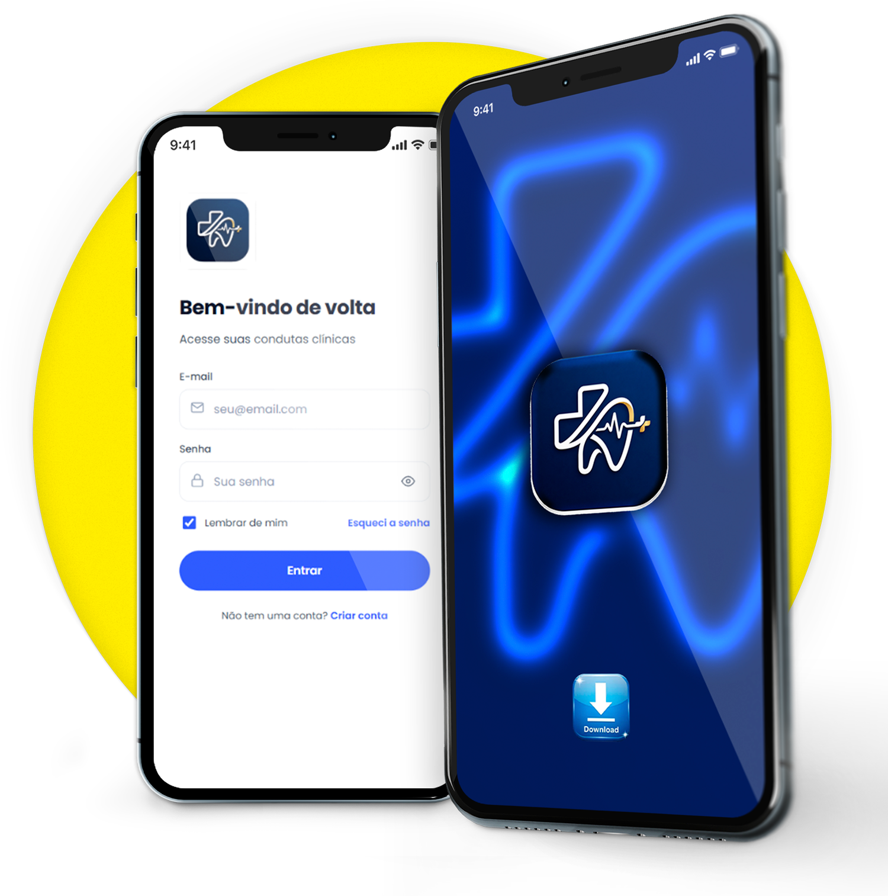
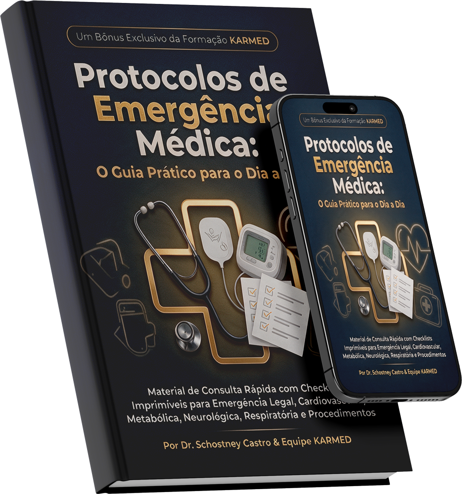
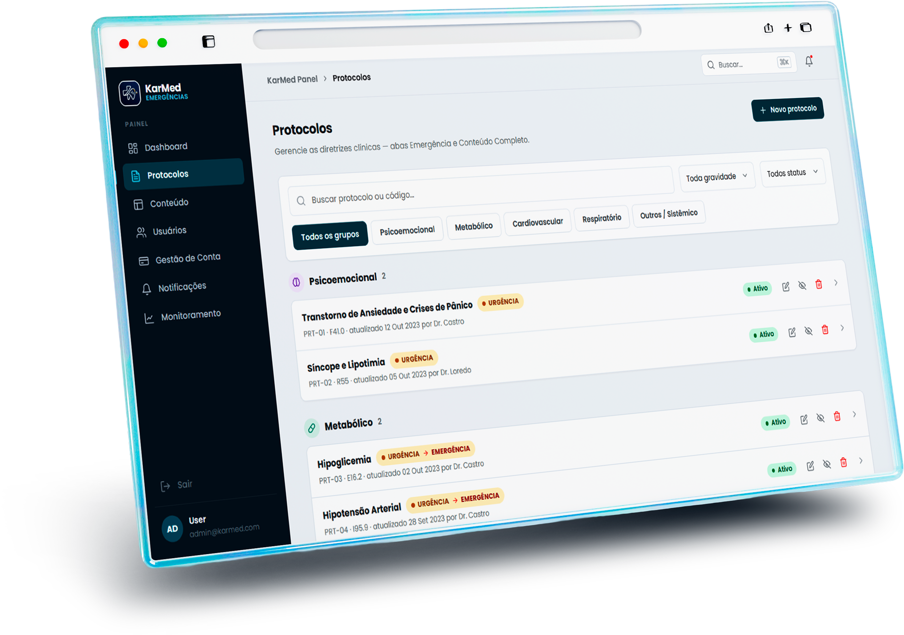
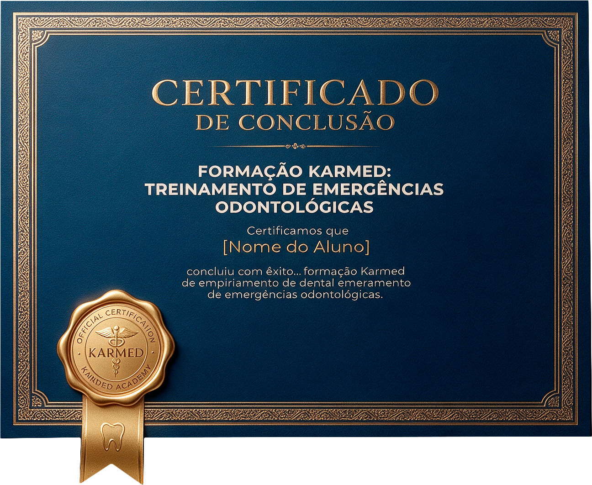

3:00
tempo para agir
Parada cardiorrespiratória, anafilaxia, hipoglicemia, crise convulsiva. Quando acontece, você tem 3 minutos e nenhum tempo para improvisar.
Mais de 10 anos em UTI de alta complexidade viraram protocolos que cabem no seu consultório: reconhecer, decidir e agir antes que a ambulância chegue.
Não é mais um curso online. É um sistema de preparo com aplicativo e inteligência artificial de apoio à decisão clínica.
Procedimentos mais invasivos, sedação, pacientes com comorbidades. A odontologia moderna expõe você a um risco real, e a graduação entregou um preparo raso, teórico e distante do consultório.
Síncope, hipoglicemia ou algo mais grave? Você tem segundos para reconhecer, e cada segundo em dúvida é um segundo perdido.
Lábio inchando, chiado, pressão caindo. Anafilaxia não espera a ambulância chegar: a adrenalina precisa estar na sua mão, na dose certa.
Ter DEA, ambu e medicação é obrigação legal. Saber usar em menos de 3 minutos, com a equipe inteira, é o que separa o susto da tragédia.
Reanimação básica é o mínimo. Sedação, vasoconstritor, ansiedade, hemorragia pós-cirúrgica são cenários da odontologia que o curso genérico ignora.
Não é um curso solto. É estudo, ferramenta na mão e consultório equipado, funcionando juntos, com o rigor da medicina intensiva aplicado à odontologia.
16 módulos práticos, do reconhecimento à ação, protocolo por protocolo. Gravado, direto ao ponto, com casos reais.
O único curso do Brasil com aplicativo próprio e inteligência artificial de apoio à decisão clínica, na palma da mão.
Guia completo para montar e manter a maleta obrigatória do consultório, conforme a Resolução CFO nº 115/2011.

assets/mockups/app-celular.pngPNG com fundo transparente, proporção 1500×1513Você descreve os sinais observados; a IA cruza com os protocolos validados pelo corpo docente e sugere as hipóteses mais prováveis e a sequência de conduta. Apoio à decisão, nunca diagnóstico automático.
Ou selecione o protocolo direto. Funciona sem internet.
Cruzando os sinais com a base científica do curso.
Com a dose calculada pelo peso do paciente.
Documentação pronta para sua segurança jurídica.
Ter os itens é obrigação (Resolução CFO nº 115/2011). Saber onde está cada um e usar em menos de 3 minutos é o que o KARMED ensina.
Cada módulo segue a lógica da UTI: reconhecer em segundos, decidir com protocolo, agir com o que está na maleta. O conteúdo é organizado em cinco frentes.

Material de consulta rápida para imprimir e deixar ao lado da maleta, e a mesma capa no celular para quando a pressa não deixar folhear.

assets/mockups/plataforma-notebook.pngPNG com fundo transparente, 1800×1264Responsabilidade profissional, materiais obrigatórios e a anamnese que evita a emergência.
Síncope, hipotensão, hipertensão, dor torácica e parada cardiorrespiratória.
Ansiedade e pânico, hipoglicemia e crise convulsiva.
Asma, reações de hipersensibilidade e obstrução de vias aéreas.
Hemorragias e acessos vasculares, com a técnica de quem faz isso todo dia.
100% online e assíncrono, acesso vitalício, compatível com celular e certificado de conclusão. O programa completo, módulo a módulo, é liberado na área do aluno.
Médico intensivista, professor titular de universidade federal, especialista em acessos vasculares e advogado de Direito Médico. Cada módulo sensível é assinado pelo especialista da área.
Conteúdo clínico pelo Dr. Schostney Castro, revisão acadêmica pelo Prof. Dr. Claudio Loredo de Sá, legislação pelo Dr. Leonardo Martins e acessos vasculares pela Dra. Schostilaine Castro. Protocolos baseados em diretrizes atuais, com atualização periódica. Nenhum conteúdo genérico.
Não precisa de formação médica. O conteúdo foi desenhado para cirurgiões-dentistas, com linguagem clara e protocolos práticos, sem jargão desnecessário.
Sete dias para testar por dentro. Se não for para você, devolvemos tudo, sem justificativa.

assets/mockups/certificado.pngPNG com fundo transparente, 1296×1062Não encontrou sua resposta? Fale direto com nosso time no WhatsApp. Respondemos rápido.
A maioria dos dentistas nunca teve uma emergência grave, até o dia em que tem. O curso existe justamente para o cenário de baixa frequência e alto risco: quando acontece, não há tempo para improvisar.
O BLS cobre reanimação básica de forma genérica. O KARMED vai além: protocolos específicos para o consultório odontológico, incluindo cenários exclusivos da prática como reações a anestésicos e sedação.
Compare com o custo de uma única ação por negligência ou omissão de socorro. O investimento no KARMED é uma fração do risco financeiro e reputacional de não estar preparado.
O curso é 100% assíncrono e cada módulo é objetivo e direto ao ponto. Você estuda no seu ritmo, do celular, com acesso vitalício.
Não. O conteúdo foi desenhado especificamente para cirurgiões-dentistas, com linguagem clara e protocolos práticos, sem jargão médico desnecessário.
A IA do app é apoio à decisão, nunca diagnóstico automático. Ela organiza o protocolo já validado pelo corpo docente para que você aja com clareza sob pressão. A decisão final é sempre do profissional.
Ótimo, significa que sua carreira transcorreu sem incidentes graves. Mesmo assim, você seguirá com um diferencial de segurança para pacientes, equipe e para a sua tranquilidade profissional.
O acesso é liberado na área do aluno logo após a confirmação do pagamento, com login para o curso e instruções de instalação do app. Qualquer dúvida, nosso time responde no WhatsApp.
A próxima emergência não vai perguntar se você fez o curso. Entre no ecossistema KARMED hoje e leve o rigor da UTI para o seu consultório.
Seg. a Sex., 9h às 18h · contato@karmed.com.br